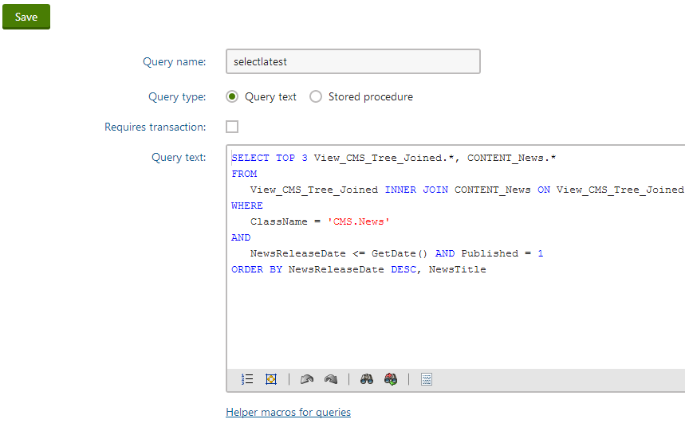

Loading data using custom queries
Queries allow you to load any type of data stored in the Kentico database, including:
Custom table records
General system objects (classes) - both default (such as users, forums, newsletters, SKUs) and custom module classes
Using queries gives you full control over the data retrieval, but requires knowledge of SQL syntax and the Kentico database structure.
To display data loaded by a query on the website:
Add one of the query web parts or controls onto the page.
Query web parts
Query controls
On portal engine pages, load and display query data using dedicated web parts:
Query data source (connected with a basic listing web part)
Grid with custom query
Repeater with custom query
Datalist with custom query
Universal viewer with custom query
Use controls to display query data on ASPX page templates or inside custom components:
Select a predefined query through the Query name property (or create a new query).
Note: For queries that belong to module data classes (both the default Kentico modules and custom modules), you cannot use the query selector. You need to manually type the full query name into the property in format: <class code name>.<query name>
Assign transformations.
The component loads data from the database using the selected query, and displays the results according to the specified transformation.
Managing queries
You can create new queries or modify existing ones through the administration interface. The location depends on the type of data that you wish to load:
Page types - Page types -> Edit page type -> Queries
Custom tables - Custom tables -> Edit table -> Queries
Data classes - Modules -> Edit module -> Classes -> Edit class -> Queries
The following properties are available when creating or editing queries:
|
Property |
Description |
|
Query name |
Serves as the identifier of the query. Cannot contain spaces, periods or other special characters. The full identifier of the query is in format: <parent object code name>.<query name> |
|
Query type |
Determines whether the query is processed as a stored procedure. |
|
Requires transaction |
If enabled, the system processes the query as a database transaction. |
|
Query text |
Write the code of queries using standard Transact-SQL syntax. |

Editing a query for the News page type
Overriding default system queries
The system uses automatically generated queries for basic operations. If necessary, you can override the defaults by creating new queries with the following Query name:
select - loads a single record
selectall - loads all records from the table (with optional conditions)
selectversions - loads page version records
insert - adds a record
insertidentity - adds a record with an explicitly set ID column
update - updates a single record
updateall - updates multiple records in the table (based on conditions)
delete - removes a single record
deleteall - deletes records from the table (based on a where condition)
searchtree - used by the SQL search to search the fields of individual page types
Warning: Changing the default queries without considering all options may prevent the system from working correctly. We recommend the following customization approach:
Create a new query with the required Query name and click Save (leave the query text empty).
Click Generate default query above the editor to get the default code of the system query.
Extend the query according to your custom requirements.
Save the query.
Using properties to modify queries
Listing web parts and controls provide properties that set sections (clauses) of the query that loads the data. These properties allow users to adjust the data retrieval for individual instances of web parts or controls. To maintain this functionality for your custom queries, add the following expressions into the query code:
|
SQL code expression |
Web part property |
Control property |
|
##ORDERBY## |
ORDER BY expression |
OrderBy |
|
##COLUMNS## |
Columns |
SelectedColumns |
|
##TOPN## |
Select top N |
TopN |
|
##WHERE## |
WHERE condition |
WhereCondition |
For example, the following query selects pages of the Page (menu item) type:
SELECT ##TOPN## ##COLUMNS## FROM View_CMS_Tree_Joined AS V INNER JOIN CONTENT_MenuItem AS C ON V.DocumentForeignKeyValue = C.MenuItemID AND V.ClassName = N'CMS.MenuItem' WHERE ##WHERE##ORDER BY ##ORDERBY##When executing queries for web parts/controls, the system replaces the expressions with the values of the corresponding properties.
Dynamically inserting parameters into SQL clauses
You can insert dynamic parameters into SQL clauses by adding macro expressions into the values of the related web part properties (such as the Where condition). For example:
{% CurrentAliasPath %} – alias path of the current page.
{% CurrentDocumentCulture.CultureCode %} – the culture code of the language in which the current page is displayed.
{% CurrentSiteID %} – SiteID value of the current site.
Note: Macros are only supported in web part properties. You cannot place macros directly into the SQL code of queries or stored procedures.
Security
By default, the system protects the SQL properties of web parts against SQL injection attacks, which may affect how macros are resolved. If the macro returns a string value that contains single quote characters ('), the system replaces them with two single quotes (''). This may cause SQL syntax errors.
To disable single quote escaping for specific macro expressions, add the handlesqlinjection macro parameter and set its value to false:
{% ... |(handlesqlinjection)false %}
Note: Disabling SQL protection may create security vulnerabilities if the macro resolves its value according to data that can be modified by the website's users, such as in the case of macros that load values from the URL query string.